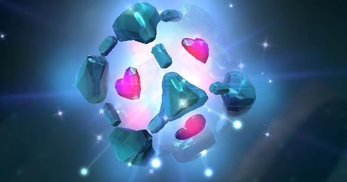
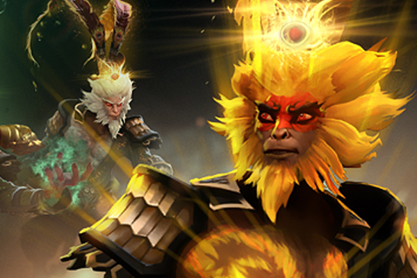
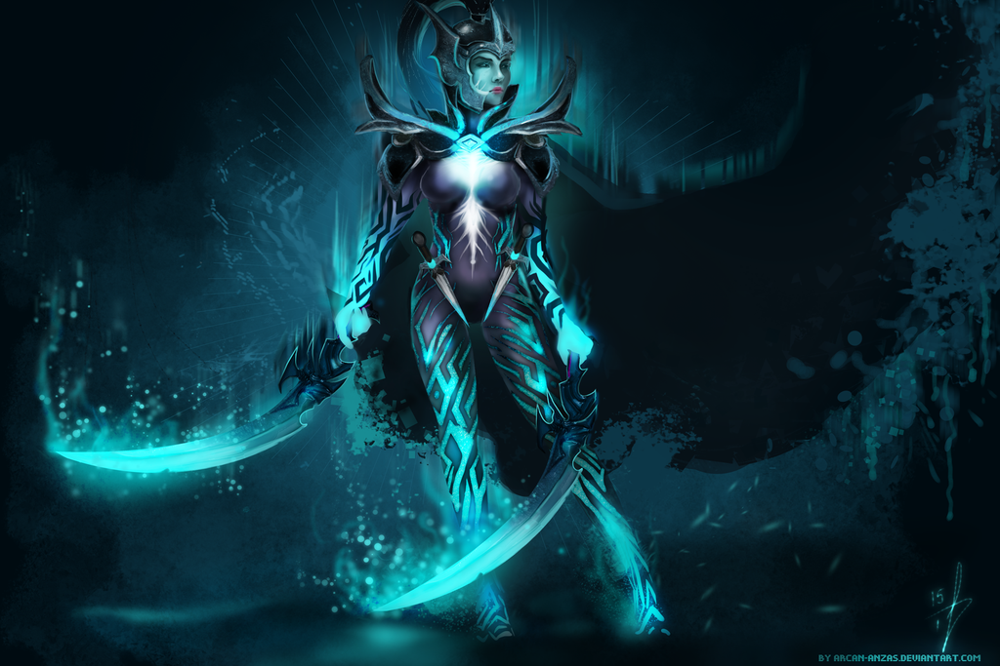
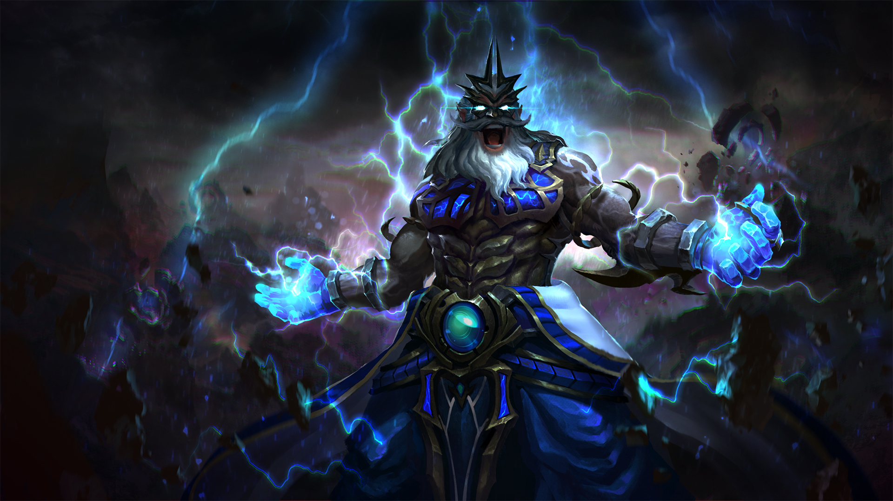

HEROE DE FUERZA
IO
Al igual que los dos grandes jinetes gemelos oscuridad y luz, su historia, como un antiguo viajero más, se ha perdido en el tiempo. Io el Ente es uno de los Fundamentales del universo; una fuerza anterior al tiempo, un merodeador de los reinos más allá de la comprensión de los mortales. Io no es nada menos que la suma de todas las fuerzas de atracción y repulsión del plano material, una manifestación viviente de la carga que mantiene unidas a las partículas entre sí. Solo a través de la manipulación controlada de estas fuerzas Io puede sentirse en el plano presencial.
VER VIDEO

HEROE DE AGILIDAD
MONKEY KING
Durante quinientos años tuvo que soportar la presión de la montaña. Solo su cabeza estaba libre del aplastante peso de la cárcel de piedra que los dioses antiguos habían invocado para detener su pueril rebelión. El musgo crecía sobre las líneas de su cara, la hierba le brotaba por las orejas y su visión estaba enmarcada por las flores silvestres que prosperaban en torno a sus mejillas. La mayoría lo creía muerto hace tiempo, atormentado por los dioses por librar una guerra contra los cielos hasta que no quedó nada más que su leyenda. Pero, según se cuenta, Monkey King no puede morir.
VER VIDEO

HEROE DE AGILIDAD
PHANTOM ASSASSIN
Mediante un proceso de divinidad, algunas niñas son escogidas para formar parte de las Hermanas del Velo, una orden que considera el asesinato una parte sagrada del orden natural. Las Hermanas del Velo identifican a sus objetivos mediante la meditación y las aseveraciones de los oráculos. No aceptan ningún contrato y nunca parecen perseguir objetivos por razones políticas o mercenarias. Sus asesinatos no guardan relación con ninguna agenda reconocible y pueden parecer totalmente aleatorios: Una figura poderosa no tiene más posibilidades de ser eliminada que un campesino o un pocero.
VER VIDEO

HEROE DE INTELIGENCIA
ZEUS
Señor de los Cielos, padre de dioses, Zeus trata a todos los Héroes como si fueran sus ruidosos hijos rebeldes. Tras ser sorprendido innumerables veces en mitad de encuentros con incontables mujeres mortales, su divina esposa le dio finalmente un ultimátum: 'Si amas tanto a los mortales, ve y conviértete en uno de ellos. Si consigues demostrar que eres fiel, entonces vuelve a mí como mi inmortal marido. De lo contrario, ve y muere entre tus criaturas.' Zeus encontró su lógica (y su magia) irrefutable y aceptó su plan. Él ha mantenido su mejor comportamiento desde entonces, apreciando algo más.
VER VIDEO